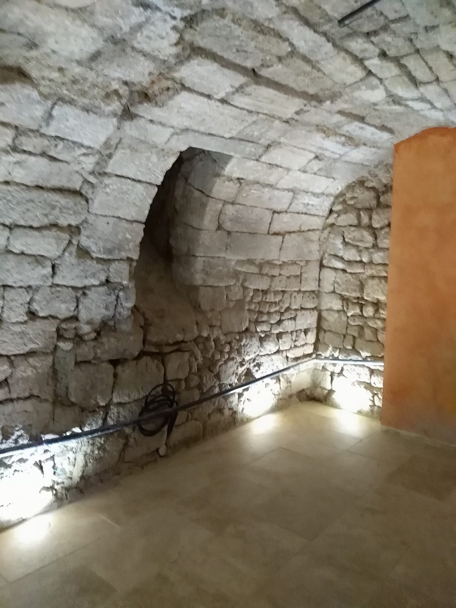
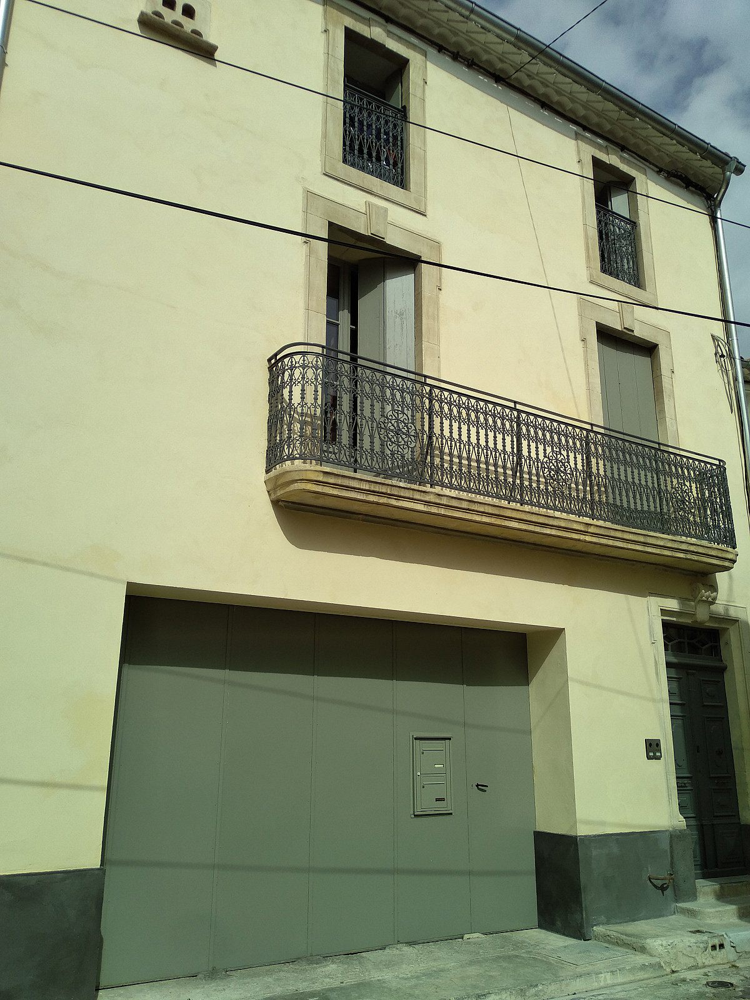
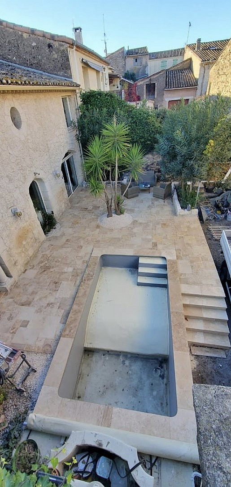

Trois métiers,
une seule exigence.
Chaque chantier engage un geste, une matière et une mémoire. L'atelier intervient sur trois terrains qui ont en commun le respect du bâti.

Restauration du patrimoine
[À COMPLÉTER — Phrase d'accroche : votre rapport au patrimoine, les bâtiments restaurés, votre approche.]
[À COMPLÉTER — Détails sur les techniques traditionnelles : maçonnerie de pierre sèche, enduits à la chaux aérienne, badigeons, calades. Mentionner les certifications éventuelles (RGE, monuments historiques, etc.).]
- — Restauration de murs en pierre, façades anciennes
- — Enduits à la chaux aérienne et badigeons
- — Calades de galets, dallages anciens
- — Reprise de voûtes, arcs et linteaux
- — Bâtiments classés ou inscrits

Rénovation du bâti ancien
[À COMPLÉTER — Phrase d'accroche : comment vous abordez une rénovation, le respect des matériaux d'origine, l'écoute du client.]
[À COMPLÉTER — Paragraphe sur le processus de rénovation : diagnostic, choix des matériaux (chaux plutôt que ciment, pierres locales), gestion du chantier, coordination avec d'autres corps de métier.]
- — Rénovation complète de maisons anciennes
- — Reprise de façades, isolation respirante
- — Salles de bains, espaces intérieurs
- — Rénovation énergétique respectueuse
- — Changement d'usage (commerces, gîtes)

Construction & extension
[À COMPLÉTER — Phrase d'accroche : construire dans le respect d'un existant, créer en cohérence avec un territoire.]
[À COMPLÉTER — Approche pour la construction neuve, surélévations, terrasses, plages de piscine. Insister sur le lien avec le paysage languedocien et les matériaux locaux.]
- — Construction sur élévation, surélévations
- — Terrasses, plages de piscine
- — Extensions de maisons existantes
- — Aménagements extérieurs en pierre
- — Cours, murs de clôture
Du premier échange
à la livraison.
Visite & écoute
[À COMPLÉTER — Décrire la première rencontre : diagnostic visuel, écoute du projet, conseil sans engagement.]
Étude & devis détaillé
[À COMPLÉTER — Devis transparent, choix des matériaux argumenté, calendrier estimatif.]
Chantier & livraison
[À COMPLÉTER — Réalisation soignée, suivi régulier, livraison et garanties.]